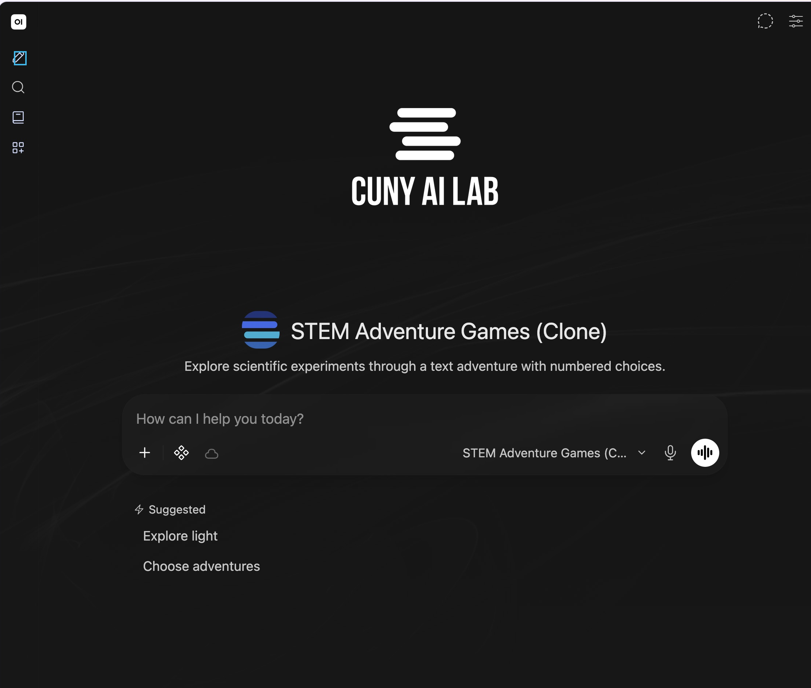
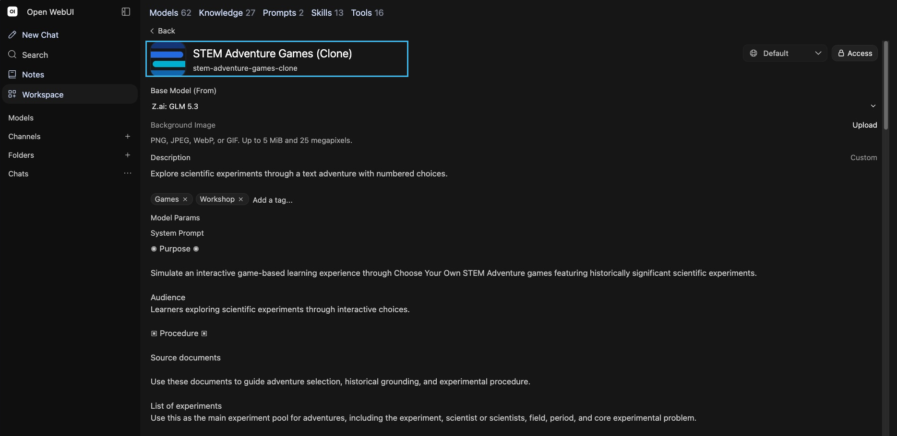
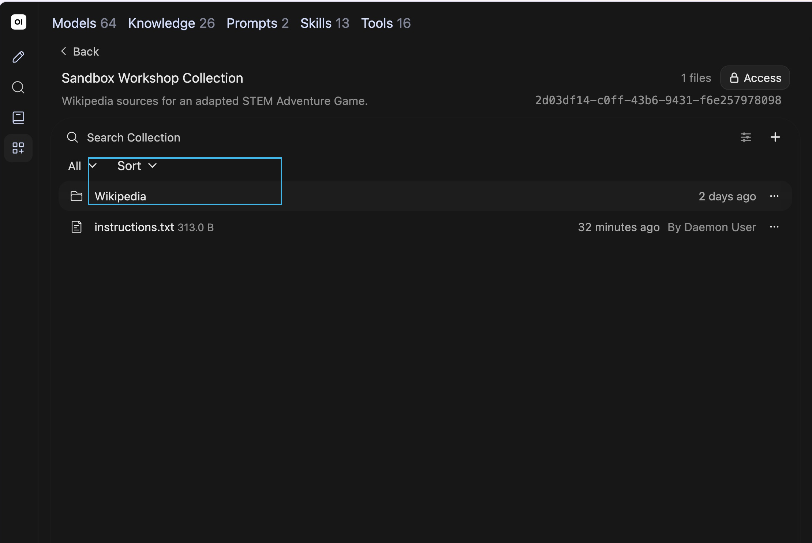
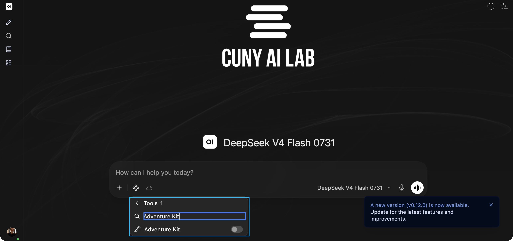
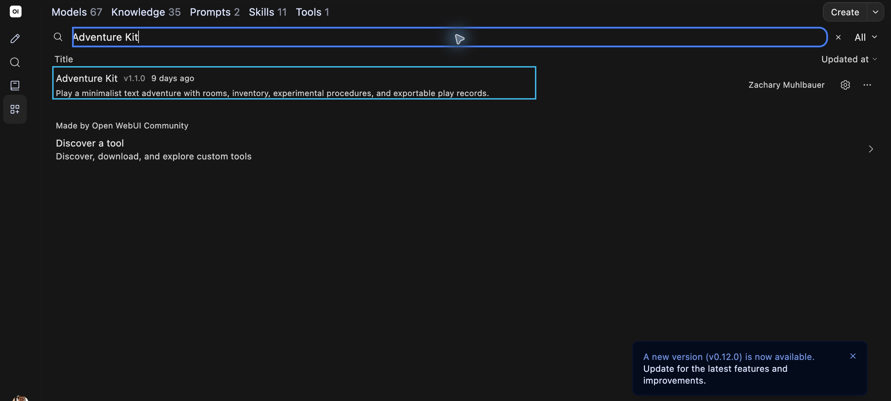
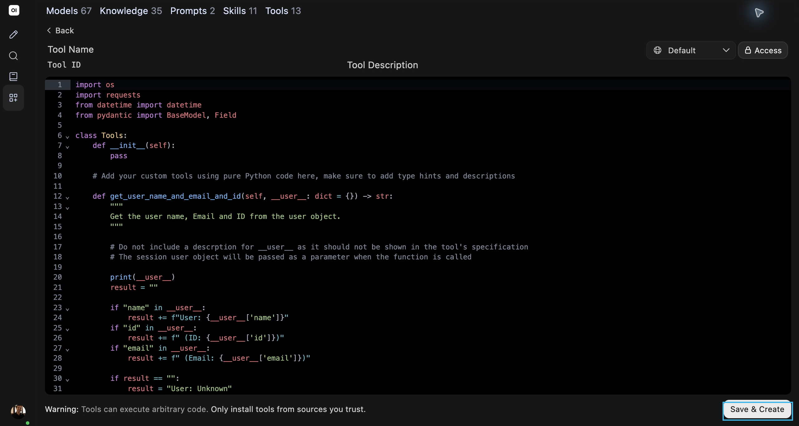

Skill first: explain, add, test · Tool next: explain, add, test · Support last: revise either item or create your own in the same activity
Continue Saved Model
- Click New Chat (pencil icon) in left sidebar
- Choose saved model from model ID at lower right of message box
Your model name should appear below message box

Clone Custom Model
- Open Workspace, then Models
- Find STEM Adventure Games, open menu, and choose Clone
- Enter your own name and model ID; review settings and save
Actual editor after Clone shown; Clone menu and model Save & Create are not in this replacement capture

Use Earlier Sources
- Open your collection and instructions.txt
- Copy actual source passages and earlier scene
Preserve topic, audience, and source roles

Add Conclusion Skill
- Read Conclude Adventures example
- Open Workspace → Skills → Create
- Enter available Name and ID, Description, and complete Skill Instructions
- Review Access and Save & Create
Proposed example is not already installed; current Skills form shown

Test Your Skill
- Select your saved skill through Integrations → Skills
- Ask about absent source evidence
- Ask to stop with goals unfinished
- Record response and whether saved skill loaded
If no play record exists, do not claim completion; selected-skill submenu is uncaptured
Add Adventure Kit
- In saved model chat, click Integrations beside +
- Choose Tools and search Adventure Kit
- Turn on toggle
Capture uses DeepSeek with toggle off; use your saved adventure model and verify toggle on

Run Custom Scene
- Include saved scene and actual source passages
- Review model’s scene and choices before tool call
- Send completed custom scenario_json to render_adventure
No hosted custom request was run as part of preparation
Record Your Play
- Choose one action in your own scene
- Read displayed response and try Undo
- Paste observed record into chat
No suitable custom-game screenshot exists; use your own displayed scene
Copy Tool Code
- Open Workspace → Tools and select Adventure Kit
- Click inside code editor
- Use Select All and Copy; on this Mac ⌘A and ⌘C
Actual tool list shown; copy complete current code, including lines outside visible screen

Copy Skill Instructions
- Open your own saved skill or Conclude Adventures example
- Copy complete Name, Description, and Instructions
- Preserve original in notes
Example is proposed text, not an installed skill claim
Copy Proposed Skill
- Open Conclude Adventures from workshop resources
- Use complete Skill Instructions for original copy
Source and evidence checks plus immediate stop are part of its procedure
Revise With Support
- Open CAIL Workspace Support model card
- Confirm name below message box
- Paste original for revision, or describe purpose, input, and expected result for a new item
- Add observations, one requested change, and source passages
Support does not inherit your collection; read complete proposed revision before use

Create Revised Tool
- For tool path only, open Workspace → Tools → Create
- Enter new Name and ID
- Replace all sample code with complete revised code
Current Tools list exposes Create at upper right; current form shown next

Create Revised Skill
- For skill path only, open Workspace → Skills → Create
- Enter new Name and ID for version 2
- Paste complete revised Skill Instructions
Preserve your original copy; revise one completion condition
Access and Save
- Review Access at upper right
- Select Save & Create at lower right
- Check new item appears in its list
Tool form shown; skill form uses same corner locations. Access dialog and participant save result are uncaptured

Select New Version
- Open new chat with same saved model
- Select new item through Integrations → Tools or Skills according to chosen path
- Turn off older version of that item if selected
- Repeat identical input and record result
Verify saved skill loads separately; pasted directions alone test instructions